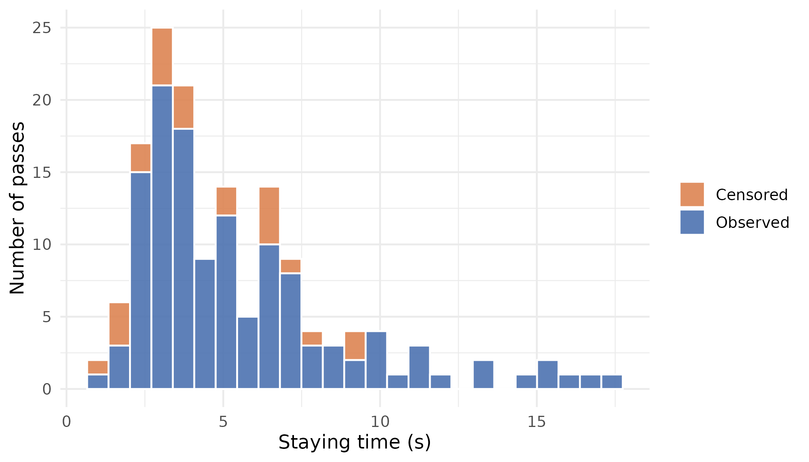
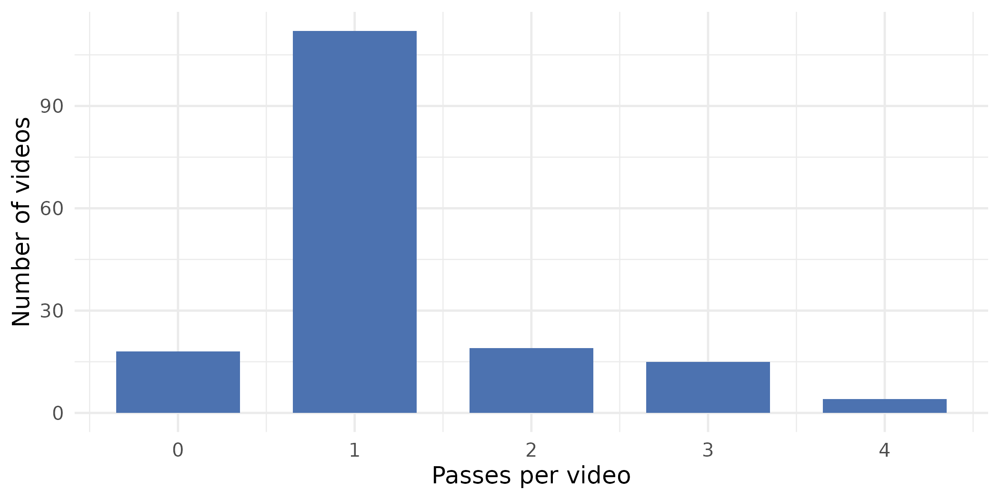
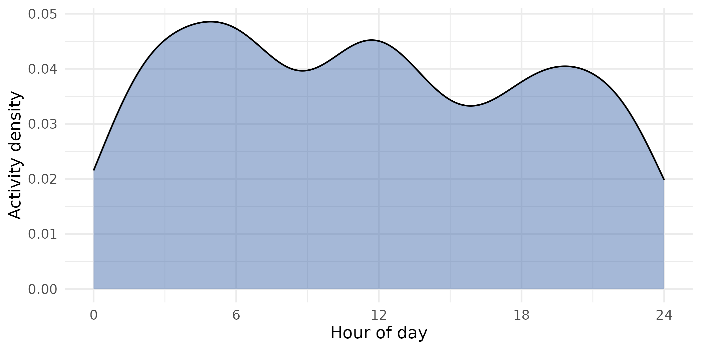

Estimating Density With REST and RAD-REST Models
2026-07-08
Source:vignettes/articles/random_encounter_and_staying_time.Rmd
random_encounter_and_staying_time.RmdDensity, the number of animals per unit area, is one of the most requested quantities in wildlife ecology: it underpins red-list assessments, harvest quotas, trend monitoring and impact evaluation. Yet for the great majority of species it is genuinely hard to measure. The gold-standard methods (spatial capture–recapture and its relatives) need animals to be individually identifiable from natural marks or tags. Most mammals carry no such marks, so those methods simply do not apply.
Camera traps offer a way out. The challenge is that a pile of detections is not a density: the number of times a camera fires depends on how many animals are present, how long each lingers in front of the lens, how active the species is, and how big the monitored patch is. The Random Encounter and Staying Time (REST) model of Nakashima, Fukasawa & Samejima (2018) ties those pieces together into a single, estimable equation, and its RAD-REST extension (Nakashima et al. 2026) makes the data far cheaper to collect.
This article explains how REST and RAD-REST work, and shows the
complete workflow in the ct package, from raw detections to
a posterior density estimate using a small bundled example dataset.
The theory of REST
The focal area
The observer defines a small focal area of known size \(S\) directly in front of each camera (for example a 2–3 m² patch marked during deployment). The only question asked of each video is: did the animal pass through that focal area, and for how long? Everything outside the focal area is ignored.The focal area is fixed and measured, so the geometry is known in advance.
The density equation
Imagine animals, at a density \(D\), moving across the landscape. At any instant, the expected number sitting inside a focal area of size \(S\) is proportional to \(D \times S\), scaled by the fraction of the day the species is actually moving, \(p_{\text{act}}\). Each visiting animal stays for an average time \(\bar{t}\) before leaving, so over a survey of duration \(T\) the camera records
\[ \mathbb{E}[Y] \;=\; \frac{D \times S \times T \times p_{\text{act}}}{\bar{t}}, \]
where \(Y\) is the number of passes through the focal area. Re-arranging gives the REST density estimator:
\[ \boxed{\;\hat{D} \;=\; \frac{Y \times \bar{t}}{S \times T \times p_{\text{act}}}\;} \]
Read literally: density rises with more passes (\(Y\)) and longer stays (\(\bar{t}\), because a long-staying animal produces few entries, so a given number of observed passes implies more animals), and falls as the focal area, survey effort, or activity level grow. REST estimates every term on the right jointly in a Bayesian model, so the uncertainty in staying time and activity flows through into the density estimate rather than being ignored.
To do that, three sub-models are fitted together.
1. Staying time (a survival model)
The mean staying time \(\bar{t}\) is estimated from the time each animal spends in the focal area. There is a subtlety: when an animal is still inside the focal area at the moment the video clip ends, its true staying time is unknown. We only know it exceeds the clip length. These observations are right-censored, exactly as in survival analysis.
REST therefore models staying time with a parametric survival
distribution (lognormal, gamma,
weibull or exponential), letting censored
records contribute through the survival function rather than being
discarded or truncated. The choice of distribution matters and can be
made objectively by WAIC (see ct_rest_select_stay()).
2. Activity proportion
A camera only detects an animal that is up and moving; a sleeping
animal in the focal area is invisible to the encounter process. The
activity proportion \(p_{\text{act}}\), the fraction of the
24-hour cycle the species is active, rescales the estimate accordingly.
ct offers two ways to estimate it:
-
kernel: the fixed circular-kernel estimator of Rowcliffe et al. (2014); fast and the default. -
mixture: a non-parametric Bayesian von Mises mixture (Nakashima et al. 2026); slower, but it propagates activity uncertainty into the density posterior.
3. Encounters
Finally, the passes \(Y\) themselves are modelled. In the original REST this the number of passes per station, modelled as negative-binomial to absorb overdispersion.
Counting the total number of passes \(Y\) is the most tedious and error-prone part of REST labelling: a single clip may show an animal cross the focal area several times, and analysts miscount. RAD-REST sidesteps this. Instead of a total, each video is placed in a pass-count class:
-
y_0= videos showing 0 passes through the focal area, -
y_1= videos showing exactly 1 pass, -
y_2= videos showing 2 passes, and so on,
with N = total videos. The distribution of these classes
is modelled with a Dirichlet-multinomial (so miscounting is absorbed
statistically), from which the mean number of passes per
video is estimated. The total passes are then recovered
internally as \(Y = N \times
\overline{\text{passes}}\) and fed into the same density
equation. The payoff is much lighter labelling. You only judge “how many
passes did this clip show?” — at the cost of needing at least
three count classes for the model to be identifiable.
Assumptions
REST and RAD-REST rest on a few key assumptions:
- the focal area is correctly delineated and measured at every camera;
- animals enter the focal area independently and are not attracted to or repelled by the camera;
- the population is closed over the survey window; and
- staying time, activity and encounters are representative of the population (e.g. cameras are not deliberately placed where animals linger).
The ct package
The reference implementation (the ctrest package)
exposed the method as a set of lower-level building blocks.
ct wraps the whole workflow into a small, consistent set of
functions:
| Function | Role |
|---|---|
ct_rest_stay() |
Build the staying-time / censoring table |
ct_rest_passes() |
Aggregate per-station passes (REST) or pass-count
classes (RAD-REST) |
ct_rest_effort() |
Add camera-trapping effort (days) per station |
ct_rest_activity() |
Turn detection times into radians for activity modelling |
ct_rest_select_stay() |
Compare staying-time distributions by WAIC |
ct_fit_rest() |
Fit the REST / RAD-REST density model (MCMC) |
What’s improved is that every function checks its
inputs up front and fails with a clear, actionable message (powered by
the cli package) instead of an obscure error deep in the
sampler. Arguments are named for readability
(stay_distribution, focal_area,
density_formula), the data flows through tidy data frames,
and ct_fit_rest() upports covariates and random effects on
staying time and density, both REST and RAD-REST, and both activity
estimators — all from one call.
A worked example
We use the small simulated dataset bundled with ct.
rest_detection holds one row per video;
rest_station holds one row per camera with a
Habitat covariate.
library(ct)
library(dplyr)
library(ggplot2)
data(rest_detection)
data(rest_station)
rest_detection %>% head(8)| Station | Species | DateTime | y | Stay | Cens |
|---|---|---|---|---|---|
| ST01 | Red duiker | 2022-03-01 22:35:51 | 1 | 5.4 | 0 |
| ST01 | Red duiker | 2022-03-02 14:03:35 | 1 | 2.6 | 0 |
| ST01 | Red duiker | 2022-03-03 11:44:17 | 1 | 3.9 | 0 |
| ST01 | Red duiker | 2022-03-04 00:55:27 | 1 | 6.0 | 0 |
| ST01 | Red duiker | 2022-03-04 19:37:00 | 3 | 2.5 | 0 |
| ST01 | Red duiker | 2022-03-05 02:33:33 | 1 | 7.3 | 0 |
| ST01 | Red duiker | 2022-03-05 09:48:24 | 1 | 9.7 | 0 |
| ST01 | Bushbuck | 2022-03-06 20:15:49 | NA | NA | NA |
Step 1: Staying time
ct_rest_stay() pulls the staying-time and censoring
columns and attaches the station covariates. Cens = 1 flags
a right-censored stay. The target species is the
Red duiker.
stay <- ct_rest_stay(
detection_data = rest_detection,
station_data = rest_station,
stay_column = Stay, # column in rest_detection
censor_column = Cens # column in rest_detection
)
stay %>% filter(Species == "Red duiker") %>% head(6)| Station | Species | Stay | Cens | Habitat |
|---|---|---|---|---|
| ST01 | Red duiker | 5.4 | 0 | forest |
| ST01 | Red duiker | 2.6 | 0 | forest |
| ST01 | Red duiker | 3.9 | 0 | forest |
| ST01 | Red duiker | 6.0 | 0 | forest |
| ST01 | Red duiker | 2.5 | 0 | forest |
| ST01 | Red duiker | 7.3 | 0 | forest |
The plot below shows that the longest stays are disproportionately censored (the animal was still present when the clip ended), exactly the records a naive mean would bias downward.
stay %>%
filter(Species == "Red duiker") %>%
mutate(Censored = ifelse(Cens == 1, "Censored", "Observed")) %>%
ggplot(aes(Stay, fill = Censored)) +
geom_histogram(bins = 25, colour = "white", alpha = 0.9) +
scale_fill_manual(values = c(Observed = "#4C72B0", Censored = "#DD8452")) +
labs(x = "Staying time (s)", y = "Number of passes", fill = NULL) +
theme_minimal(base_size = 12)
Figure 1: Distribution of staying times for Red duiker.
Step 2: Passes and effort
For the original REST we need the total passes Y per
station; for RAD-REST we need the pass-count classes.
ct_rest_passes() builds either with the model
argument.
# Original REST: total passes per station
stations_rest <- ct_rest_passes(rest_detection, rest_station, model = "REST")
# RAD-REST: videos split into y_0, y_1, ... classes
stations_rad <- ct_rest_passes(rest_detection, rest_station, model = "RAD-REST")
stations_rad %>% filter(Species == "Red duiker") %>% head(4)
#> # A tibble: 4 × 9
#> Station Species N y_0 y_1 y_2 y_3 y_4 Habitat
#> <chr> <chr> <int> <int> <int> <int> <int> <int> <chr>
#> 1 ST01 Red duiker 28 2 18 4 4 0 forest
#> 2 ST02 Red duiker 13 1 10 2 0 0 forest
#> 3 ST03 Red duiker 26 3 18 3 2 0 forest
#> 4 ST04 Red duiker 19 2 13 2 1 1 savannaThe pass-count classes are what RAD-REST models. Most videos show a single pass, a few show more, and the model learns this whole distribution rather than a single hand-counted total.
stations_rad %>%
filter(Species == "Red duiker") %>%
summarise(across(starts_with("y_"), sum)) %>%
tidyr::pivot_longer(everything(), names_to = "class", values_to = "videos") %>%
mutate(passes = as.integer(sub("y_", "", class))) %>%
ggplot(aes(passes, videos)) +
geom_col(fill = "#4C72B0", width = 0.7) +
labs(x = "Passes per video", y = "Number of videos") +
theme_minimal(base_size = 12)
Figure 2: Pass-count classes for Red duiker, summed over stations. RAD-REST models this distribution with a Dirichlet-multinomial to estimate the mean number of passes per video.
Effort (camera-active days) is approximated from the span of
detections at each station with ct_rest_effort(). Supply a
real deployment table if you have one.
stations_rest <- ct_rest_effort(rest_detection, stations_rest)
stations_rad <- ct_rest_effort(rest_detection, stations_rad)
stations_rest %>% filter(Species == "Red duiker") %>%
select(Station, Species, Y, Habitat, Effort) %>% head(4)
#> # A tibble: 4 × 5
#> Station Species Y Habitat Effort
#> <chr> <chr> <dbl> <chr> <dbl>
#> 1 ST01 Red duiker 38 forest 28.5
#> 2 ST02 Red duiker 14 forest 21.3
#> 3 ST03 Red duiker 30 forest 27.5
#> 4 ST04 Red duiker 24 savanna 27.9Step 3: Activity
ct_rest_activity() keeps independent detections and
converts their time of day to radians, ready for the activity model.
activity <- ct_rest_activity(rest_detection, independence_minutes = 30)
head(activity, 4)
#> # A tibble: 4 × 3
#> Species Station time
#> <chr> <chr> <dbl>
#> 1 Red duiker ST01 5.92
#> 2 Red duiker ST01 3.68
#> 3 Red duiker ST01 3.07
#> 4 Red duiker ST01 0.242Plotting the time of day reveals the species’ diel pattern — here the clear crepuscular (dawn/dusk) peaks that determine \(p_{\text{act}}\).
activity %>%
filter(Species == "Red duiker") %>%
mutate(hour = time * 12 / pi) %>%
ggplot(aes(hour)) +
geom_density(fill = "#4C72B0", alpha = 0.5, adjust = 0.8) +
scale_x_continuous(breaks = seq(0, 24, 6), limits = c(0, 24)) +
labs(x = "Hour of day", y = "Activity density") +
theme_minimal(base_size = 12)
Figure 3: Time-of-day of independent detections for the focal species. The activity proportion that enters the REST equation is estimated from this circular distribution, either by kernel density or a Bayesian von Mises mixture.
Step 4: Choosing the staying-time distribution
Rather than guessing, compare candidate distributions by WAIC.
bayes_p is a posterior predictive check (values near 0.5
indicate good fit).
ct_rest_select_stay(
stay, species = "Red duiker",
stay_distribution = c("lognormal", "gamma", "weibull", "exponential"),
iterations = 3000, burnin = 1000, chains = 2, cores = 2
)── Staying-time model selection ──
# A tibble: 4 × 5
model family random_effect WAIC bayes_p
<chr> <chr> <chr> <dbl> <dbl>
1 Stay ~ 1 lognormal none 612. 0.49
2 Stay ~ 1 gamma none 628. 0.41
3 Stay ~ 1 weibull none 641. 0.38
4 Stay ~ 1 exponential none 705. 0.12Lognormal wins here, so we use it below.
Step 5: Fit the REST model
ct_fit_rest() runs the whole joint model. Give it the
three tables, the focal species, the focal-area size in m², and the
chosen distribution.
fit <- ct_fit_rest(
stay_data = stay,
station_data = stations_rest,
activity_data = activity,
species = "Red duiker",
focal_area = 3.0, # focal-area size in m^2
model = "REST",
stay_distribution = "lognormal",
iterations = 5000, burnin = 1000, chains = 3, cores = 3
)
fit── REST density estimation ──
# A tibble: 2 × 11
Species Station Variable mean sd lower median upper Rhat n.eff cv
<chr> <chr> <chr> <dbl> <dbl> <dbl> <dbl> <dbl> <dbl> <int> <dbl>
1 Red duiker All density 29.5 6.73 18.7 28.6 46.1 1.00 485 0.229
2 Red duiker All mean_stay 6.01 0.33 5.45 5.98 6.67 1.00 359 0.054density is in individuals per km²,
mean_stay in seconds, each with a
posterior mean, standard deviation, 95% credible interval, \(\hat{R}\) and effective sample size. Full
posterior draws are in fit$samples (a
coda::mcmc.list) for trace plots with the
MCMCvis package, and fit$waic ranks any
candidate density models.
Step 6: Fit RAD-REST
Switching to RAD-REST needs only the pass-classified station table
and model = "RAD-REST":
fit_rad <- ct_fit_rest(
stay_data = stay,
station_data = stations_rad,
activity_data = activity,
species = "Red duiker",
focal_area = 3.0,
model = "RAD-REST",
stay_distribution = "lognormal"
)
fit_rad── RAD-REST density estimation ──
# A tibble: 3 × 11
Species Station Variable mean sd lower median upper Rhat n.eff cv
<chr> <chr> <chr> <dbl> <dbl> <dbl> <dbl> <dbl> <dbl> <int> <dbl>
1 Red duiker All density 29.5 8.88 17.9 28.5 46.3 1.02 338 0.301
2 Red duiker All mean_stay 5.99 0.34 5.38 5.98 6.73 1.00 296 0.057
3 Red duiker All mean_pass 1.25 0.08 1.09 1.25 1.41 1.01 913 0.065RAD-REST reports the extra mean_pass term (≈ 1.25 passes
per video) and here recovers essentially the same density as REST —
reassuring, since the two differ only in how the passes are counted.
Going further: covariates, random effects, and activity uncertainty
ct_fit_rest() accepts model formulas and a random-effect
term, so density and staying time can vary with habitat or other
covariates, and the von Mises mixture can replace the kernel when you
want activity uncertainty propagated:
# Density varies by habitat; station-level random effect on staying time;
# Bayesian activity estimation.
ct_fit_rest(
stay_data = stay,
station_data = stations_rest,
activity_data = activity,
species = "Red duiker",
focal_area = "FocalArea", # a per-camera focal-area column in station_data
model = "REST",
density_formula = ~ Habitat, # density covariate
stay_random_effect = "Station", # random effect on staying time
activity_method = "mixture" # propagate activity uncertainty
)With a covariate in density_formula, the summary returns
a per-station density column instead of a single All row;
focal_area may be a single number or the name of a
per-camera column in station_data.
Interpreting the estimates
-
Density units.
densityis individuals per km². Multiply by your study area (in km²) for abundance. -
Convergence. Check that \(\hat{R} \approx 1.00\) and
n.effis comfortably in the hundreds; if not, raiseiterations/chains. The examples above use short runs for speed. -
Model choice. Use
ct_rest_select_stay()to pick the staying-time distribution, andcompare_models = TRUEinct_fit_rest()to rank density covariate sets by WAIC (fit$waic). - REST vs RAD-REST. Prefer RAD-REST when counting every pass is impractical or error-prone; prefer REST when you already have reliable total pass counts. They should agree when both are well-specified.
References
Nakashima, Y., Fukasawa, K., & Samejima, H. (2018). Estimating animal density without individual recognition using information derived from camera traps. Journal of Applied Ecology, 55(2), 735–744. https://doi.org/10.1111/1365-2664.13059
Nakashima, Y., Yajima, G., & Matsuoka, R. (2026). Reducing data processing effort in camera trap density estimation: Extending the REST model by explicitly modelling animal detection processes. Methods in Ecology and Evolution, 2026(December 2025), 850–862. https://doi.org/10.1111/2041-210x.70248
Rowcliffe, J. M., Kays, R., Kranstauber, B., Carbone, C., & Jansen, P. A. (2014). Quantifying levels of animal activity using camera trap data. Methods in Ecology and Evolution, 5(11), 1170–1179. https://doi.org/10.1111/2041-210X.12278